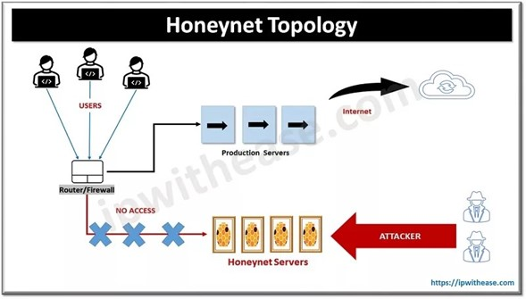

Una honeynet son herramientas de seguridad que simula una red completa para ser atacada por intrusos.
Funciona como una especie de "pecera" donde se observa al atacante en su entorno. Esta red consta de sistemas dispuestos a recibir ataques, con mecanismos para monitorear y registrar las acciones del intruso. Estudiar el comportamiento del atacante permite entender sus tácticas y motivaciones.
Las honeynets son los honeypots más avanzados y esta presentación destaca su poder, examina diferentes propuestas y resalta la importancia de su virtualización.

Una honeypot es una herramienta que se utiliza como señuelo, con el fin de ser atacada, por esto todo tráfico que pase por ella será detectado como un ataque o intrusión.
Una honeypot no tendrá comunicación alguna con ninguna entidad y, en caso de detectar tráfico cuyo origen sea el honeypot, este será tomado inmediatamente como una amenaza.
Por lo tanto, una honeynet representa la forma más sofisticada de honeypot, ofreciendo un alto nivel de interacción con los intrusos y permitiendo una recopilación extensa de datos sobre ataques.
Sin ser una herramienta lista para ser instalada, es una red completa con sistemas diseñados para ser atacados, pudiendo simular cualquier componente de red, incluyendo routers y switches, imitando así una red real de una organización.
El desarrollo de estas redes ha sido impulsado por el Honeynet Project, fundado en el año 2000, cuyo propósito es comprender las técnicas y motivaciones de los atacantes y compartir conocimientos al respecto.
Este proyecto reúne a expertos en sistemas operativos, desarrolladores de herramientas de seguridad, psicólogos y otros perfiles diversos.
Además de los sistemas destinados a recibir ataques, una honeynet incluye dispositivos adicionales para detectar, filtrar y registrar el tráfico entrante y saliente, así como las acciones de los intrusos una vez que comprometen un sistema simulado.
Todo esto se realiza de manera pasiva para no alertar al intruso sobre su monitoreo. Estos dispositivos cumplen funciones clave:
-
Control del intruso: Filtrar las conexiones nocivas del intruso y evitar que utilice sistemas comprometidos para atacar otros recursos.
-
Captura de datos: Registrar todo el tráfico dentro y fuera de la honeynet, así como las acciones del intruso en sistemas comprometidos para estudiar tácticas y motivaciones de los atacantes.
-
Centralización de información: Enviar de manera segura los datos capturados a un servidor centralizado para su almacenamiento y análisis, permitiendo un mejor control y análisis de las experiencias recopiladas y una visión más clara de los diferentes tipos de ataques en la red.
La eficacia de una honeynet radica en su capacidad para recopilar datos detallados, esenciales para entender y combatir las amenazas cibernéticas,
permitiendo un análisis exhaustivo de las tácticas utilizadas por los atacantes y facilitando estrategias de defensa más robustas.
Volviendo con el proyecto honeynet, muestran las herramientas usadas para la recolección de datos en honeynet aunque solo muestran las más usadas por la organización:
- Honeyned: Emula los almacena IP de varios sistemas operativos y provee de manera opcional servicio de emulación básica.
- Nephentes: Emula vulnerabilidades comunes de MS Windows; es extremadamente bueno capturando malware como gusanos.
- Honeytrap: Detecta intentos de conexión contra puertos TCP no conectados.
- Kojoney: Emula los procesos de un servidor SSH y graba los nombres de usuario y contraseñas de los atacantes.
- Sebek: Monitorea los honepots de alta interacción, engancha llamadas de lectura o escritura para manipular el acceso de archivos o actividad de entrada y salida.
- Hflow: Cruza datos obtenidos en Snort, pof y sebek en una estructura de datos relacionada para almacenamiento en una base de datos terminal.
- Honeywall: Es usando para construir de forma rápida una honeynet de alta interacción. Permite un análisis y control transparente de los datos.
- Capture HPC: Ejecuta aplicaciones dentro de una máquina virtual de Windows, aunque su mayor uso ha sido encontrar posibles URL maliciosas.
- SpamPot: Colecciona y analiza mensajes vía email.
Sin embargo, existen algunos inconvenientes en el uso de este tipo de herramientas pues se requiere de una instalación con total precisión y cuidado, de tal forma que la seguridad de la red no se vea comprometida en este punto, además de otros problemas legales que esto acarrearía.
Por lo tanto, las honeynets Son herramientas altamente especializadas diseñadas para simular entornos de red completos y capturar información detallada sobre tácticas de ataque y comportamiento de los intrusos, esta información es vital para entender las amenazas y mejorar las defensas de seguridad.
La evolución de las honeynets se ha producido gracias a proyectos como el Honeynet Project, que reúne a expertos de diversos campos para comprender mejor las tácticas y motivaciones de los atacantes, mejorando así las estrategias de defensa cibernética.
Aunque pasivamente monitorean las acciones de los intrusos para no alertarlos, activamente controlan y filtran las conexiones maliciosas para evitar daños mayores.